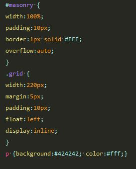

JQuery
JQueryプラグイン
モーダルウィンドウ▲Top
モーダルウィンドウとは、GUIシステムで、ユーザーに注意を促したり、選択肢を提示したり、緊急の状態を知らせたりする目的でよく使われる。 モーダルダイアログやポップアップと呼ばれることもある"modal"とは「モードを持つ」という意味であり、モーダルウィンドウが表示されている間はアプリケーションの状態が「ユーザーの応答待ちモード」になっている。 対義語は"modeless"（モードレス）である。ウィキペディアより
プラグイン： Colorbox (author:Jack Moore)
レストランサイトのメニューや商品画像やなど小さい画像一覧のなかから画像をクリックしたときに、
拡大写真が表示されるように実装されることが多い。
colorbox実装例

- Elastic Transition
- 初期値のためオプションの設定なし（Transition:"Elastic"）
次画面へ遷移するとき、グループの画像サイズが相違する場合、伸縮しながらエフェクト表示される。
サイズが同じ場合は変化なし。 - Fade Transition
- オプションの設定 Transition："Fade"
次画面へ遷移するとき、フェードインフェードアウトしながらエフェクト表示する。 - No Transition + fixed width and height (75% of screen size)
- オプションの設定 transition:"none", width:"75%", height:"75%"
次画面へ遷移するエフェクト表現なし、画面サイズを指定できる。デモは横幅と高さを75%で表示。 - Slideshow
- オプションの設定 slideshow:true
スライドショーで表示する。
カルーセル▲Top
カルーセルとは、指定された複数画像をクルクルと順繰りに表示するプラグインで、
ランディングページのイメージ画像に実装されることが多い。
プラグイン： bxslider (author:Steven Wanderski)
デモを表示する bxsliderダウンロード オプションの設定bxslider実装例
- auto: true
- true:自動でスライドスタート false:手動でスライドスタート
- mode: "fade"
- スライドモード horizontal：横スライド(初期値) fade:フェイドアウトインで横スライド vertical：縦スライド
- speed:1000
- スライドするスピードを指定。単位（ミリ秒）
- randomStart:true
- ture:ランダムスタート fasle:ランダムスタートなし
メーソンリー▲Top
メーソンリーとは、指定された複数要素を石畳のように整列表示するプラグインで、
新聞や雑誌のようなグリッドレイアウト整列で表現できる。また画面のサイズ変更に応じてレイアウトを自動的に整列されるため
あらゆるサイズのスマホ画面での切り替えも自動でレスポンシブされる。
プラグイン： Masonry (author:David DeSandro)
デモを表示する メーソンリーダウンロード オプションの設定Masonry実装例
CSS Source
- itemSelector: '.grid'
- 整列対象の要素クラス名を指定する
- isFitWidth: true
- コンテナの親要素のサイズに基づいて、使用可能な列数に合わせてコンテナの幅を設定します。
trueにすると、コンテナをCSSで中央揃えにすることができます。要素幅のパーセンテージ幅ではtrueが機能しません。
また、項目の幅を120pxなどの固定サイズ（ピクセル単位）にする必要があります。それ以外の場合は、それぞれの要素が崩壊表示されます。 - isAnimated: true
- true:画面サイズを変更したとき、自動でアニメーション整列を行う false:しない
- randomStart:true
- ture:ランダムスタート fasle:ランダムスタートなし